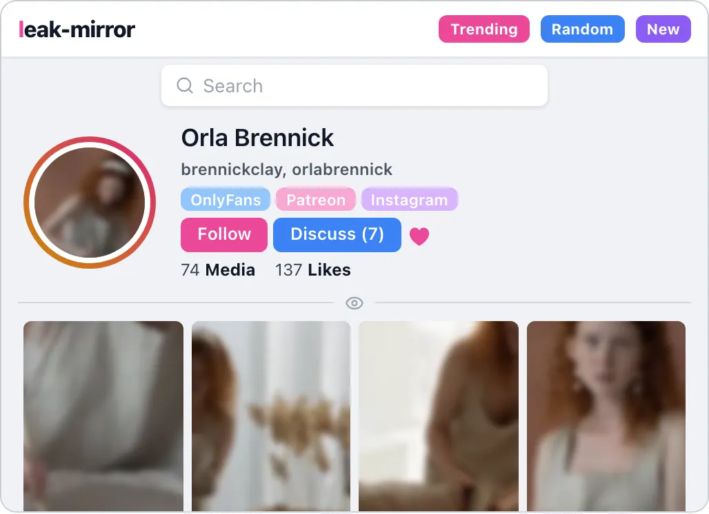
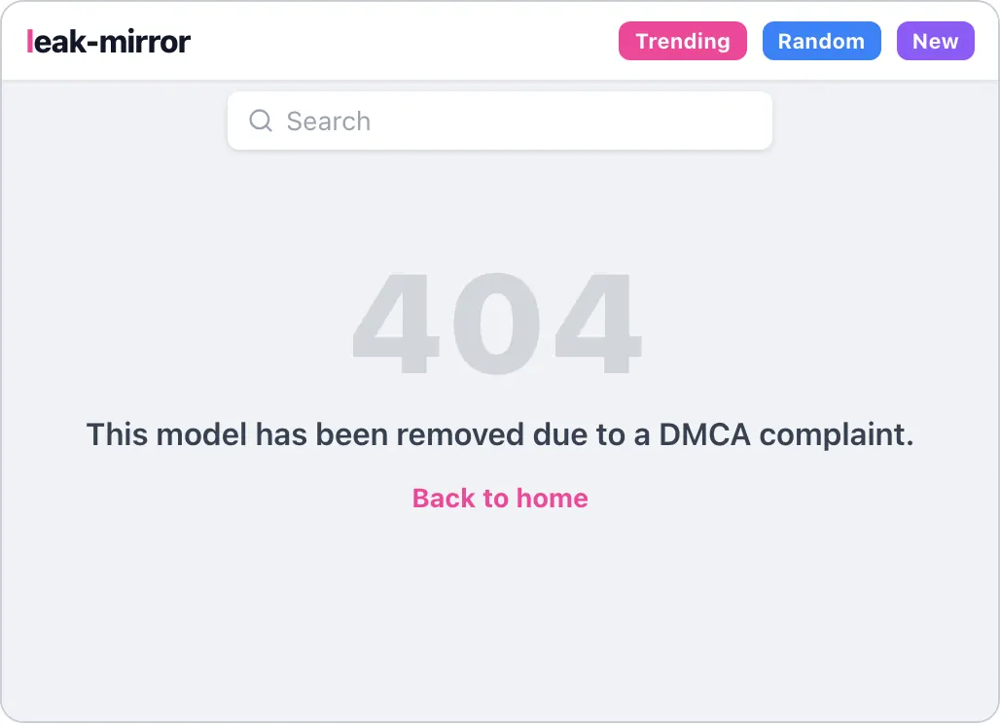
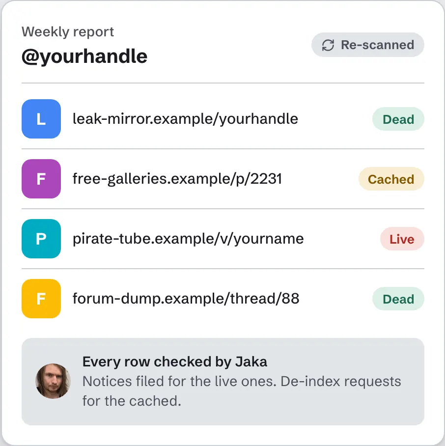

My OnlyFans or Fansly content leaked. What do I do?
Hi, I'm Jaka. I remove leaked content for creators, by hand.
Finding your paid content on a leak site feels awful. But there's a clear way to deal with it, and you can do all of it yourself, for free. First, find out how far it has spread: one link rarely means one copy.
Start here: see every copy, free
Type your username. The scan gives you a list of every link it finds.
Free. No account, no card. I never need your password.
Then do this, in order
- Save your evidence. Keep the leak URL, a link to your original post, and the date you found it. You need all three for notices.
- See how far it has gone. Use the free scan above for a list of links. Or search your username on Google together with words like "leak".
- Check each link is really yours. Leave out your own profiles, pages you licensed, and people who only look like you. A wrong notice can come back on your accounts, and false claims carry legal risk.
- Sort by where each link lives. Reddit posts go through Reddit's form. Leak sites and file hosts go to the site, then its host and registrar.
- File the notices. The DMCA guide has the required elements and a template.
- File with Google separately. Google does not remove anything automatically. Three routes here.
- Keep a list and re-check. Note what is live, cached or dead. Re-uploads happen, so send new notices for new copies.
That's the whole process. It's mostly time and repetition.


Same process for every platform
Where the content was sold doesn't change the route. OnlyFans, Fansly and Patreon content are all covered by the same copyright rules, because the rights come from you making the work, not from the platform.
When it's worth paying someone
A few links? Do it yourself. The steps above are enough.
Many sites, or copies that keep coming back? That's when help is worth the price. How it works with me:
- Free: the scan, and one page removed (after a one-page authorization, free to sign), so you see it work first.
- €250/month: I re-scan every week and file new copies.
- €500 one-time: one big clean-up, with re-uploads covered for 40 days.
Both include your official website and blog posts, so Google has real pages about you to rank.

I open every link myself before I file. I can't promise 100% removal: some sites ignore every notice, and I'll tell you that up front.
Under 18, or the images were taken when you were under 18? Don't send them to anyone, me included. Take It Down, run by NCMEC, works from your own device: your file stays there and only a digital fingerprint is shared with participating platforms.
General information, not legal advice. I'm not a lawyer and Abolita is not a law firm. Checked against the linked sources on 6 November 2026.
Quick answers
Can I find out who leaked it?
The DMCA has a subpoena procedure that lets a copyright owner ask a US federal court clerk to issue a subpoena to a provider to identify an alleged infringer. It's a legal step, so talk to a lawyer about it. You don't need to know who did it to file a takedown.
Do you need my login?
No. I never need your passwords or logins. The free scan needs only your username.
Sources
Related
Not sure how bad it is? Check first.
The scan is free and needs only your username. No account, no card. Send me the report link and I'll remove one page free, so you see it work before you pay anything.